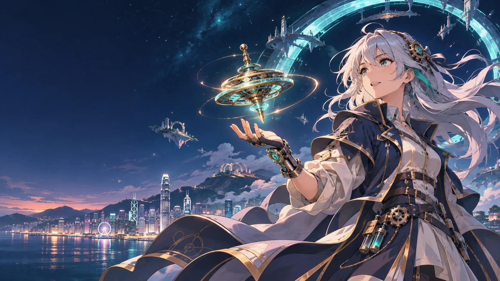

遊戲，是想像力的起點。
每一個想像，
都是新世界。
把好奇心寫成程式，把靈感變成冒險。
歡迎來到 WCY.HK STUDIO 的遊戲與創作宇宙。
LATEST WORLDS最新作品
01鄰伴智慧社區平台2026.10.30 · NEIGHBOUR-CLOUD↗02揮手鑑古2026.10.29 · QINGMING-HAND-TREASURE↗03陀螺競技場2026.08.31 · BAYBLAD-SIMULATOR↗焦點作品
每 6 秒切換；滑鼠移入或鍵盤操作時暫停。
02 OUR WORLDS
全線作品，等你探索。
暫時搵唔到呢個世界。試試另一個關鍵字？
✦ 海報為各作品量身創作的動漫概念插圖；實際玩法與畫面，請開啟作品體驗。
03 BEHIND THE WORLDS
一個人
不止一種可能。
我是一名教育工作者與創作者，專注 STEAM、人工智能與互動學習。從電腦與設計科技教學，到跨學科專題課程，我喜歡讓學習由動手做開始，將抽象概念變成可以探索、試驗和分享的作品。
我的創作結合網頁程式、教育遊戲、機械人與數碼製作，亦把生成式 AI 應用於教學與課程設計。從互動教具、3D 模型到雷射切割，我希望工具能回應課堂與日常生活的需要。
我也參與專題課程策劃及機械人團隊培訓，陪伴學生把構想做成原型，在協作、測試與修正之間尋找答案。這裡收錄了我把教學經驗、技術與好奇心化成作品的過程。
EDUCATION · TECHNOLOGY · CREATIVITYWCY.HK STUDIO
THE NEXT WORLD STARTS WITH A SMALL IDEA.